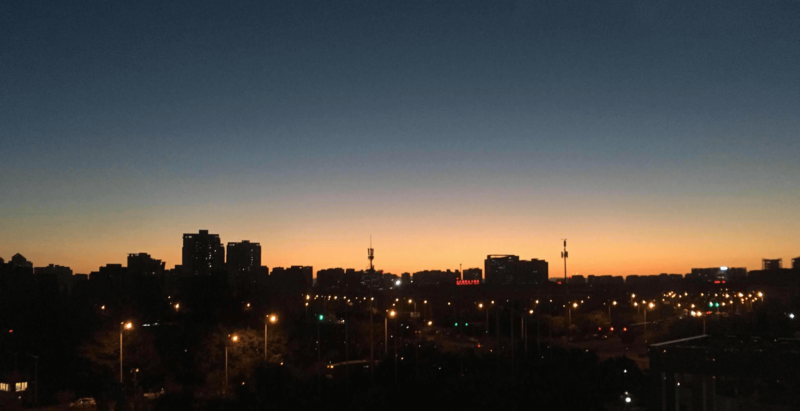
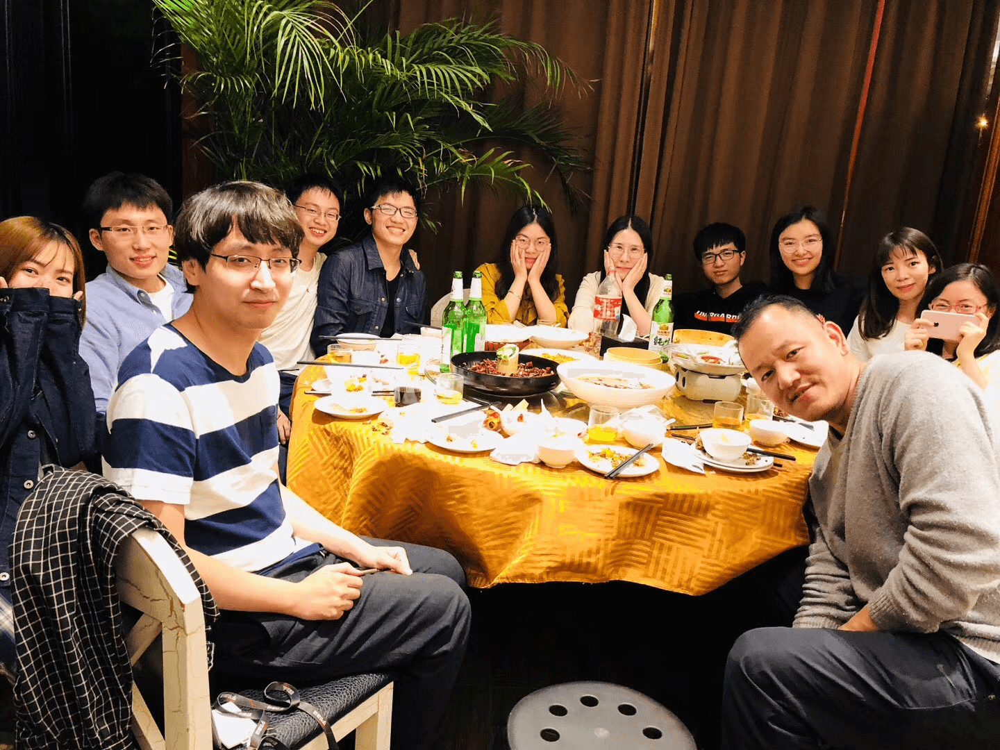

git init
还记得15年那个夏天， 独自一人拖着个行李箱，连北京城的样子都还没见到，一路坐着地铁来到了五环外的一个城中村安顿了一个窝。一个人来到一座城市，定有一个理由。我当时的理由很简单 ——赚钱。那时的北京对我来说是一座完全陌生的城市，甚至陌生到没有一个朋友，一个同学。这一年学会了享受一个人时光，一个人看电影，一个人吃火锅。无拘无束，自由自在。
git add .
在学校画pcb写单片机的我，确实没想过日后能从事互联网的工作。非常庆幸能在美团遇到这样一个机遇，还遇到一群这么好的同事。觉得每一天都很充实，海绵一样汲取着知识。渐渐的在这个城市有了朋友，可以和朋友一起跑步，狼人杀，撸串。。
北京是一个包容性很强的城市，无论你是什么妖魔鬼怪，你总能找到你的栖息地。
如果说美团是梦想起飞的地方，那么头条就像是一把火，用激情点燃梦想。 来头条一年多收获的很多，也很享受何和一群牛逼的同事做着改变世界的事情。

git commit
不得不承认北京是我生命的重要塑造者。至少我在毕业时，没想到在北京待着这三年能改变这么多。三年前的我很喜欢“天道酬勤”这个词？ 现在看来有些鸡汤满满，现在更喜欢“低调 务实 自驱 反思”。虽然我还是有点小懒，虽然不那么聪明，但是相比三年前的我很喜欢现在的我。有时也会想想，如果当年做的决定不是来北京，那我现在会是一个什么样的自己。
git checkout -b new_branch
从来没想过在北京扎根，这是一个不属于我的城市，昂贵的房价并负担不起，户口也看不到希望，离开北京对于我来说只是时间问题。但离开了北京确实也舍弃了很多东西，也不清楚这次离开北京的选择是不是正确。
人一生有太多的选择，可能当年某个午后很小的选择，未来的一切都会变的不一样，如果当年没有读研？如果当年不选择来北京？如果当面选择继续做硬件？如果没有来头条？如果没有遇到她？之前每次回首自己做的重大决定，都很庆幸自己选择了正确的路。但细想下，也可能每条路的结果都不差看你怎么对待自己的选择，每条路都不是一帆风顺的，是抱怨后悔当初的决定？还是脚踏实地的向前？ 也可能这过程更为重要吧。同时也做了最坏的打算，真的觉得离开北京不适合，大不了再 git checkout -b一个继续撸咯。
还有不到24小时离开北京，没有太多的遗憾，只是有些不舍，舍不得的不是北京这座城，而是我的朋友们。愿我们未来一切都好。
北京的小伙伴们，再见了，有缘的话。
